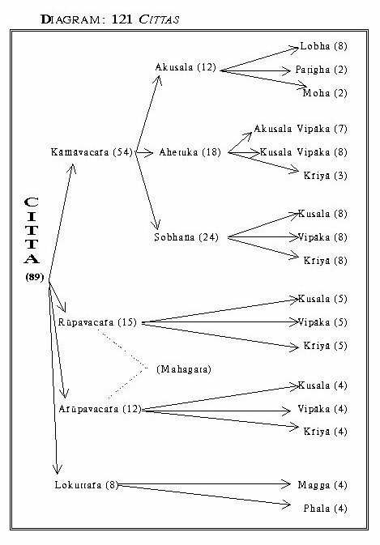

|
The Mind in Early Buddhism Bhikkhu Thich Minh Thanh New Delhi, 2001 |
|
BuddhaSasana Home Page |
Unicode VU-Times font |
|
|
The Mind in Early Buddhism Bhikkhu Thich Minh Thanh New Delhi, 2001 |
|
Please note: VU-Times font (Pali Unicode) is used in this document. |
||||||||||||||||||||||||||||||||||||||||||||||||||||||||||||||||||||||||||||||||||||||||||||||||||||||||||||||||||||||||||||||||||||||||||||||||||||||||||||||||||||||||
|
DIVISIONS OF CITTA IN THE ABHIDHAMMA
It is noted that citta in the translations of the Abhidhamma texts is usually rendered as consciousness rather than mind as it has ever been in the Sutta Piṭaka where mind is preferred as its rendering. We, nevertheless, retain the Pāli word citta with the supposition that we have already, through the previous chapters, been well informed about and quite familiar with citta and all the denotation and connotation it may have. This, however, does not exclude that sometimes 'mind' or 'consciousness' is used incidentally as citta's rendering, especially in the adapted passages from the reference source. Instead of using its renderings as mind, consciousness, thought, heart, intellect, the use of the word citta itself would help safeguarding the misleading impressions which most the renderings have due to their own shade of meaning. There is at most in any two diachronic languages no word in one language has the precisely same bearing that its equivalent in the other one does. In the following pages, all the cittas are classified into 121 types in total (see the diagram next page); each type will be dealt with in a descriptive manner that tends toward an ethical perspective. The 'types of cittas' will be mentioned simply as 'cittas' so long as confusion is not likely to take place.  The last eight lokuttara cittas come up to 40 when they are counted in connection with 5 stages of jhānas. The counting is: 54+15+12+(8x5)= 121. A. Kāmāvacarana Cittas I. Twelve Kāmāvacarana Akusala Cittas: The 12 akusala (immoral) cittas are divided into 8 cittas originated in lobha (greed, lust, or appetite), 2 in dosa (hatred), and 2 in moha (illusion). The first 8 akusala (immoral) cittas can be briefly characterized as follows, 1. Automatic (asaṅkhārikaṃ) citta, accompanied by joy (somanassa) and connected with error (diṭhigatasampayutaṃ). 2. Volitional (sasaṅkhārikaṃ) citta accompanied by joy and connected with error. 3. Automatic citta accompanied by joy and disconnected from error. 4. Volitional citta accompanied by joy and disconnected from error. 5. Automatic citta accompanied by hedonic indifference (Upekkhāsahagataṃ) and connected with error. 6. Volitional citta accompanied by hedonic indifference and connected with error. 7. Automatic citta accompanied by hedonic indifference and disconnected from error. 8. Volitional citta accompanied by hedonic indifference and disconnected from error[2]. The above mentioned cittas are akusala (immoral or unwholesome) because they are rooted in lobha (appetite or attachment) and produce aniṭha vipāka (undesirable effect)[3]. Akusala is the direct opposite of kusala. The Atthasālini gives the etymological meaning of kusala as follows, Ku, bad, +√sal, to shake, to tremble, to destroy. That which shakes off, destroys evil or contemptible things is kusala. Kusa +√lu, to cut. Kusa is from ku, bad, and √si, to lie. That which lies contemptibly is kusa, vice. Kusala is that which cuts off vice. (a) Ku, evil, bad, +√su, to reduce. That which reduces or eradicates evil is kusa, knowledge or wisdom. Kusa so derived, +√lu, to cut. That which cuts off (evil) by wisdom is kusala. (b) Kusa, so derived, + √la, to take. That which grasped by wisdom is kusala. Kusa grass cuts a part of the hand with both edges. Even so kusala cuts off both sections of passions - those that have arisen and those that have not arisen. With regard to the connotation of the term the Atthasālinī defines the word kusala as having the 4 meanings: (1) ārogya (of good health), (2) anavajja (faultless), (3) cheka (clever), and (4) sukhavipāka (productive of happy results). With the exception of cheka (clever) all the remaining three meanings are applicable to kusala. Kusala is wholesome in the sense of being free from the fault of passions, the evil of passions, and the heat of passions. Here sukhavipāka does not necessarily mean pleasurable feeling. It is used in the sense of physical and mental buoyance, softness, fitness, etc. The Atthasālini further states that kusala is used in the sense of kosallasambhūtaṭhena or kosallaṁ vuccati paññā (having accomplished with wisdom). Judging from the various meanings assigned to the term, kusala may be interpreted as wholesome or moral (some scholars prefer 'skilful' as its rendering). Akusala would, therefore, mean unwholesome or immoral. Kusala and akusala correspond to good and bad, right and wrong respectively[4]. Lobha, from √'lubh', to cling, or attach itself, may be rendered by 'attachment' or 'clinging'. Some scholars preferred 'greed' or 'craving'. In the case of a desirable object of sense, there arises, as a rule, clinging or attachment. In the case of an undesirable object, ordinarily there is aversion[5]. It is here rendered as appetite or attachment. In ethical treatment lobha is more usually rendered by greed or lust. Saṅkhārika is purely a technical term used in a specific sense in the Abhidhamma. It is formed of 'saṁ', well and √'kar', to do, to prepare, to accomplish. Literally, it means accomplishing, preparing, and arranging. In this context the term is used with 'sa'= co-, and with 'a'= un; 'sa-saṅkhārika' (lit. with effort) is that which is prompted, instigated, or induced by oneself or by another; 'a-saṅkhārika' (lit. without effort) is that which is thus unaffected, but done spontaneously. If, for instance, one does an act, induced by another, or after much deliberation or premeditation on one's part, then it is sasaṅkhārika. If, on the contrary, one does it instantly without any external or internal inducement, or any premeditation, then it is asaṅkhārika[6]. Asaṅkhārikaṃ here denotes that the citta may be determined by another person, and against the will of the conscious subject. It is inaccurate or at best misleading to render the term by 'voluntary'[7]. Nārada explains that somanassa is an abstract noun formed of 'su', good, and 'mana', mind. Literally, the term means good-mind-edness, i.e. a pleasurable feeling. Somanassa is here of psychological import, meaning simply 'pleasurable feeling plus excitement'. Diṭhi is derived from √'dis', to see, to perceive. It is usually translated as view, belief, and opinion. When qualified by 'sammā', it means right view or right belief. Here the term is used without any qualification in the sense of wrong view[8]. It usually bears a neutral import but sometimes is tending towards negative sense of micchādiṭhi. We shall examine upekkhā later in the section exposing the four akusala cittas originated in dosa and moha. The following list is an attempt to give an illustrative description of the first 8 akusala cittas[9]. 1. With joy a boy instantly steals an apple, viewing no evil thereby. 2. Prompted by a friend, a boy joyfully steals an apple, viewing no evil thereby. 3. 4. The same illustration serves for the third and fourth types of citta with the difference that the stealing is done without any false view. 5. 6. 7. 8. The remaining four types of citta are similar to the above with the difference that the stealing is done with neutral feeling. And, they can be tabulated in a simple table as follows, Table 11: Eight Akusala Cittas
Cittas'ekagatā (one-pointedness of mind) is usually positive in meaning but as a complement of the akusala citta, cittas'ekagatā has another shade of meaning[12]. In the exposition 'cittas'ekagatā', the double expression, 'solidity and steadfastness' is synonymous with stability. But that expression does not count here, cittas'ekagatā is remarked 'weak'. Such meaning as non-scattering as the opposite of scattering, produced by way of distraction and perplexity is not obtained here. But that which does not disperse co-existent states is non-scattering; that which is not distracted is non-distraction; by way of the immoral 'cittas'ekagatā' the state of mind is non-scattering. It does not tremble through the co-existent states. This is strength of concentration. Because the concentrating or fixing on the object is perverted, the concentration is false[13]. Whereas the first 8 akusala cittas are originated in lobha, the remaining 4 akusala cittas are originated in dosa (aversion) and moha (nescience) respectively. They are listed as follows, 1. Automatic (asaṅkhārikaṃ) citta accompanied by grief (domanassa) and connected with aversion (paṭigha). 2. Volitional (sasaṅkhārikaṃ) citta accompanied by grief (domanassa) and connected with aversion (paṭigha). 3. Citta accompanied by hedonic indifference (upekkhā) and conjoined with perplexity (vicikicchā). 4. Citta accompanied by hedonic indifference (upekkhā) and conjoined with distraction (uddhacca). We have already known that somanassa here means good-minded-ness or a pleasurable feeling plus excitement. The antonym of somanassa is domanassa. The term - formed by 'du', bad, and 'mana', mind - means bad-minded-ness, i.e. displeasurable feelings. And, upekkhā here as well as in the four later akusala cittas originated in lobha implies simply the absence of felt pleasure or pain, the neutral aspect of feeling, or zero-point between pain and pleasure, joy and sorrow. It is to be distinguished from the more complex intellectual and ethical state also known as upekkhā that means balance of mind, equanimity[14]. With a comparison, Nārada observes differently that somanassa, domanassa and upekkhā are purely mental. Sukha and dukkha are purely physical; this is the reason why there is no upekkhā in the case of touch that, according to the Abhidhamma, must be either happy or painful[15]. The four cittas mentioned above are immoral because the first two of which spring from paṭigha (aversion or ill-will), and the remaining two, from moha (ignorance)[16]. Paṭigha is also meant by repugnance, a form of dosa. We reserve the following space to minutely elaborate on the troublesome term upekkhā. UpekkhĀ or upekhĀ is composed of 'upa' and 'īkṣ'. It literally means 'looking on', indicating hedonic neutrality or indifference, zero point between joy and sorrow; disinterestedness, neutral feeling, equanimity. Sometimes it is equivalent to adukhham-asukha-vedanā (feeling which is neither pain nor pleasure)[17]. It is as a vedanā that upekkhā denotes hedonic neutrality or indifference. We should distinct it in this sense from the equality or balance of mind (tatramajjhattatā) which implies a complex intellectual state[18]. The Compendium of Philosophy gives the minute account of the term upekkhā that is abridged as follows: There are three principle kinds of upekkhā. First, the anubhavana-upekkhā (upekkhā of sensation or physical sensibility): the neutral feeling or zero-point between bodily pain and pleasure. This kind of upekkhā is applicable to all sensory stimuli, except those of Touch. The second kind is the indriyappabheda-upekkhā, or upekkhā dividing the (ethical) regulative forces of somanassa, or joy, and domanassa, or grief (or of mental pleasure and pain). This class of upekkhā is found in the forty-seven classes of consciousness (fifty-five classes called 'accompanied by indifference,' minus those where four senses are involved). Of these two kinds of upekkhā, the former is sensational, the latter is emotional, and both are hedonic. Lastly, there is a third class of upekkhā, and that is a cetasika, of the nineteen sobhaṇa-cetasikā (as hedonic, upekkhā comes under the cetasika of vedanā), in other words, a mental property of element, of the nineteen 'morally beautiful' properties. This is tatramajjhattatā, 'balance of mind,' 'mental equipoise.' It is intellectual and not hedonic, and appears as a nuance in conscious experience, when the object is of a 'higher' kind than those that evoke the hedonic upekkhā are. It is, e.g., a bojjhanga, or factor of Wisdom, in the consciousness of Ariya's, and a factor of higher knowledge than the average, in the consciousness of average minds. It is this tatramajjhattatā which we meet with in the phrases brahmacariyupekkhā, or religious equanimity, and sankhārupekkhā, or indifference to the world. Hedonic upekkhā enters into the composition of fifty-five classes of consciousness; intellectual (not ethical) upekkhā enters into the composition of fifty-nine such classes. These two groups of classes sometimes overlaps each other, as in the case of the 'moral resultant,' or 'inoperative classes of kāma-consciousness,' which are 'accompanied by indifference,' and again in fifth jhāna. In these overlapping classes of consciousness hedonic indifference was taken as the chief basis of division, though intellectual indifference was present as well. This applies to the upekkh'ekaggatā - 'hedonic indifference and individualization' - characterizing fifth jhāna[19]. The Atthasālini states: 'This is impartiality (majjhattaṁ) in connection with the object, and implies a discriminative knowledge (paricchindanakaṁ ñāṅaṁ)'. This explanation applies strictly to upekkhā found in sobhana citta accompanied by wisdom. Upekkhā found in the akusalas and ahetukas is just neutral feeling without the least trace of any discriminative knowledge. In the kāmāvacara sobhanas, too, there may arise that neutral feeling, as in the case of one hearing the dhamma without any pleasurable interest, and also a subtle form of upekkhā that views the object with deliberate impartiality and discriminative knowledge, as in the case of a wise person who hears the dhamma with a critical and impartial mind. Upekkhā of the jhāna citta, in particular is of ethical and psychological importance. It certainly is not the ordinary kind of upekkhā, generally found in the akusala citta that comes naturally to an evil-doer. The jhāna upekkhā has been developed by a strong will-power. Realizing that pleasurable feeling is also gross, the yogi eliminates it as he did the other three jhāna factors, and develops the more subtle and peaceful upekkhā. On the attainment of the fifth jhāna breathing ceases. As he has transcended both pain and pleasure by will-power, he is immune to pain too. This upekkhā is a highly refined form of the ordinary tatramajjhattatā, even-mindedness, one of the moral mental states, latent in all types of sobhana citta. In the Pāli phrase upekkhā satipārisuddhi (purity of mindfulness which comes of equanimity), it is the tatramajjhattatā that is referred to. This is latent in the first four jhānas too. In the fifth jhāna this tatramajjhattatā is singled out and becomes highly refined. Both neutral feeling (upekkhā vedanā) and equanimity that correspond to the one Pāli term upekkhā are found in the fifth jhāna. At the end of his exposition of upekkhā Nārada gives fourfold division of upekkhā: (1) just neutral feeling, found in the six akusala cittas (2) sensitive passive neutral feeling (anubhavana upekkhā) found in the eight ahetuka sense-door citta (dvipañcacittas) (excluding kāyaviññāṇa), (3) intellectual upekkhā, found mostly in the two sobhana kriyā cittas, accompanied by knowledge, and sometimes in the two sobhana kusala cittas, accompanied by knowledge, (4) ethical upekkhā, found in all the sobhana cittas, especially in the fifth jhāna. Brahmavihārupekkhā and saṅkhārupekkhā may be included in both intellectual and ethical upekkhā. The first is equanimity amidst all vicissitudes of life. The second is neither attachment nor aversion with respect to all conditioned things[20]. In the exposition of the insight exerted by a meditator and its effect on his vision, the passage from the Compendium of Philosophy reads that by the insight of indifference to the activities of this life he is now indifferent to the world. In other words, the good and the bad in this world no longer affect him. This feeling of indifference (upekkhā) is fostered by the balance of the mind, or equanimity (tatramajjhattatā), which must not be confounded with upekkhā, the neutral aspect of feeling, or zero-point between pain and pleasure, joy and sorrow. The former is a higher mental attitude, which may eventually be raised to the dignity of a bojjhanga (an indispensable condition or factor of knowledge or wisdom). The two may exist side by side, as in the 'consciousness accompanied by indifference' of the eight classes of moral consciousness. II. Eighteen Kāmāvacarana Ahetuka Cittas: Now we come to the 18 ahetuka (without roots) cittas. They consist of 7 akusala vipāka (resultant) cittas, 8 kusala vipāka cittas, and 3 kiriya cittas[21]. (see table 2 next page) The absence of akusala in the translation is of intention along with the note that in the seven cittas, hetu denotes only the first three of the six roots[22]. In other words the term hetu in ahetuka is applied merely to lobha, dosa and moha, and is not applied to their opposites: alobha, adosa and amoha. The seven are attributed with ahetuka because they are devoid of sampayuttaka hetu (concomitant conditions)[23]. It should be further borne in mind that even ahetuka cittas are not devoid of nibbattaka hetu (efficient cause)[24]. All the ahetuka cittas are devoid of all roots. Hence they are neither moral nor immoral by themselves. Seven of them are the resultants of immoral actions, eight of moral actions, and three are merely functionals[25]. With the exception of ahetuka cittas 18 in all, the remaining 71 cittas are called sahetuka [with root(s)]. In two there is only one root, in sixty-nine there are two or three roots. Table 12
C. A. F. Rhys Davids in A Buddhist Manual of Psychological Ethics renders citta by intellect, and mano by thought. The citta is defined here as cakkhuviññāṇa, sotaviññāṇa, ghāṇaviññāṇa, jivhāviññāṇa, kāyaviññāṇa (cognition applied to sense-impression), manodhātu (the elements of ideation), and manoviññāṇadhātu (the element of ideational cognition)[26] (see tables 3&4). This is totally in accordance with the identification of citta and viññāṇa which we have ever seen in the Sutta Piṭaka. (see table 5) Table 13
The two classes of cittas mentioned above are quite similar to the extent that if ethical aspect is put aside both the groups are hardly different from each other; the first five cittas of one group have actually a little difference from their counterparts in the other group. The ten, however, sometimes share the same common name: Dvipañcaviññāṇa. Nārada explains that in the Abhidhamma, these five pairs of consciousness are so named because they are all dependent on the five senses. As they are comparatively weak they are accompanied by neutral feeling, with the exception of body-consciousness that is accompanied by either pain or happiness; and this is a little difference we mean above. Sampaṭicchanacitta is that moment of consciousness that accepts or receives an object. Santīraṇacitta is that which investigates an object[27]. Somanassa the accompanied feeling of the seventh citta is here of psychological import, meaning simply 'pleasurable feeling plus excitement'[28]. Of the 18 ahetuka cittas, the last three are kiriya cittas. Kiriya is rendered as functional or inoperative, implying that they do not create kamma. They can be presented in the following table.
Nārada offers a brief account of all the 89 cittas, saying that the five pairs of cittas are sometimes referred to as dvipañcaviññaṇa, the two sampaṭicchana cittas and pañcadvārāvajjanacitta as 'Mano dhātu' (mind element), the rest, 76 in number as 'Mano viññāṇa dhātu' (mind-consciousness element)[30]. Table 15
It is rather painstaking to go back to the original account of those cittas given in the Dhammasaṅgaṇī; nonetheless, it may be appreciable in regard with authoritative aspect to single out one of them, namely, that of the Sampaṭicchanacitta in its non-substantiative designation kusalavipakamanodhatu: 'When, as the result of good karma having been wrought, having been stored up in connection with the sensuous universe, an element (dhātu) of ideation has arisen, accompanied by disinterestedness, and having as its object a sight, a sound, a smell, a taste, something tangible, or what not, then there is contact, feeling, perception, thinking, thought, conception, discursive thought, disinterestedness, self-collectedness; the faculties of ideation, disinterestedness, vitality. These or whatever other incorporeal, causally induced states there are on that occasion - these are states that are indeterminate'. It is noted that the significance of the affix '-dhatu' (element) here implies the absence of entity, the 'emptiness' or phenomenal character of the ideational faculty[31]. III. Twenty Four Kāmāvacarana Sobhana Cittas: The next types of citta we will discuss are 24 Kāmāvacarana Sobhana Cittas ('Thoughts of Things Beautiful in the Sensuous Sphere' or 'Beautiful Consciousness of the Sensuous Sphere') which is divided into 3 groups as follows:
a. Eight kusala
(moral) cittas with roots arising in kāmavacara
experience. Kāmāvacara is defined 'having its province in kāma', 'belonging to the realm of sensuous pleasures'. This term applies to the eleven grades of beings who are still under the influence of sensual desires and pleasures, as well as to all thoughts and conditions arising in this sphere of sensuous experience[32]. Nevertheless, it is noted that these 24 cittas are characterized by sobhana because they yield good qualities, and are connected with blameless roots such as generosity, loving-kindness, and knowledge[33], and that the word 'maha' is usually prefixed to them so as to indicate a more extensive field of action.
1. Automatic (asaṅkhārikaṃ)
citta accompanied by joy (somanassa) and connected
with knowledge (ñāṇa-sampayuttaṃ). Into this type of citta the cetasika called faculty of reason (paññindriya) enters. The terms ñāṇa and paññindriya are interchangeable in use. Vippayutta [vi+payutta] means 'separated'. Nārada offers the following illustrations for the first eight sobhanacittas: 1. One
understandingly gives something to a beggar at once with joy. The remaining four types should be understood in the same way, substituting indifference for joy. Next, the second eight sobhanacittas similar to the foregoing, which are results of action done in a former birth in kāmaloka, and are accompanied by their hetu's. b. eight vipāka cittas with roots arising in kāmaloka experience: 1. Automatic (asaṅkhārikaṃ)
citta accompanied by joy (somanassa) and connected
with knowledge (ñāṇa-sampayuttaṃ). As a seed sown on fertile soil germinates and fructifies itself sooner or later, according to its own intrinsic nature, even so kusala and akusala actions, in general, produce their due desirable and undesirable effects. They are called vipāka. Similarly, those types of citta that arise as the inevitable results of these corresponding kusala cittas are called vipāka (resultant) cittas[34]. In short, kamma is action, and vipāka is its reaction. It is the cause and the effect. Like a seed is kamma, like the fruit arising from the tree is vipāka (effect)[35]. It should be understood that both kamma and vipāka are purely mental. Figuratively speaking, vipāka is like a cool breeze that pacifies a person seated under the cool shade of a tree, even so mental states of resultant types of consciousness are causally related to coexistent mental states and material phenomena by way of 'effect' due to their effortless peaceful nature[36]. It is more minutely explained in the Athasālinī that the effects of moral and immoral (volitions) which are distinct from each other are called 'results', a name given to certain mental states which have reached the state of maturity (through distinct causes called moral and immoral volitions). 'States that involve resultant states' mean states which bear their own intrinsic nature of causing results.' Just as beings who by their intrinsic nature are liable to birth and old age, so states by virtue of their producing results should be understood to mean 'state possessing the intrinsic nature of causing results'[37]. 'Vipākadhamma-dhamma dhammā' (in the Dhamma Sangani) is accounted: The first 'dhamma' in this expression is synonymous with 'sabhāva', which is further explained by 'pakatika.' 'Vipākadhammā by itself would mean 'results,' but the whole expression refers to causes effecting those results. Sabhāva [sa+bhāva] denotes the three meanings: (1) state of mind, nature, condition; (2) character, disposition, behaviour; and (3) truth, reality, sincerity. Pakatika (adj) means being by nature, of a certain nature. The last eight sobhanacittas are similar to the foregoing, which are kriyā (inoperative or functional), and accompanied by their hetu's. c. eight kriyā cittas with roots arising in kāmaloka experience: 1. Automatic (asaṅkhārikaṃ)
citta accompanied by joy (somanassa) and connected
with knowledge (ñāṇa-sampayuttaṃ). Kiriya, in a search for a better translation, is rendered by 'karmically ineffective', 'inoperative' or 'functional'[38]. Kriyā in general means action, performance, and deed; in a special sense it denotes an act: promise, vow, dedication, intention, pledge, justice. But here in the philosophical context it indicates action ineffective as to result, non-causative, an action that ends in itself. In other words, it is used in the sense of ineffective action. Kamma is causally effective. Kiriya is causally ineffective. Good deeds of Buddhas and Arahants are called kiriya because they do not accumulate kamma as they have gone beyond both good and evil[39]. In the Abhidhamma, vipāka and kiriya are collectively called abyākata (indeterminate), that which does not manifest itself in the way of an effect. Abyākata literally means that which is not manifested. The former is abyākata, because it is an effect or result in itself and is not productive of another result; the latter, because it does not produce any effect. Rūpa (material form) is also regarded as an abyākata because it does not reproduce any kammic result[40]. Equipped with a synthetic view over the whole sobhanacittas we could observe that let alone their difference featured by moral, resultant, and inoperative, all the three groups of sobhanacittas share the same characterization as presented in the following table.
The Buddha and Arahants also experience all these twenty-three types of vipāka cittas as they are bound to reap the good and bad effects of their past actions till they die. But they do not experience the first eight kusala cittas, as they do not accumulate fresh kamma that has reproductive power, since they have eradicated all fetters that bind oneself to existence. When they do any good act, instead of the usual kusala cittas, they experience the eight kriyā cittas that possess no reproductive energy. Ordinary persons and even holy ones of the first three grades of saintship do not experience these eight cittas[41]. B. Rūpāvacarana Cittas The next division we are going to work on should be rūpāvacarana cittas 15 in number. As the foregoing twenty four cittas in the sensuous sphere, the fifteen cittas arising in the form-sphere fall under the three divisions: (1) Five types of kusala cittas arising as rūpajhāna experience which one can develop in this very life; (2) Five types of vipāka cittas which one can experience after death; and (3) Five types of kriyā cittas which are experienced only by Buddha and Arahants either in this life or by Arahants in the rūpaloka[42]. It is noted that the five jhāna vipākas which are the corresponding resultants of the five jhāna kusalas could be experienced in the rūpaloka proper, not in the kāmaloka whereas jhāna kusalas and jhāna kriyās could be experienced in the kāmaloka continuously even for a whole day[43]. The twelve are listed as follows,
1. Kusala
citta of the first stage of jhāna. This occurs together
with vitakka (initial application), vicāra
(sustained application), pīti (pleasurable interest),
sukha (pleasure), and ekagatā (individualization or
one-pointedness). II. Five Vipāka Cittas of Rūpajhāna (which one can experience after death): 1. Vipāka
citta of the first stage of jhāna. This occurs together
with vitakka (initial application), vicāra
(sustained application), pīti (pleasurable interest),
sukha (pleasure), and ekagatā (individualization or
one-pointedness). III. Five Kriyā Cittas (which are experienced only by Buddha and Arahants either in this life or by Arahants in the rūpaloka): 1. Kriyā citta
of the first stage of jhāna. This occurs together with
vitakka (initial application), vicāra (sustained
application), pīti (pleasurable interest), sukha
(pleasure), and ekagatā (individualization or
one-pointedness). Rūpavacara or rūpaloka literally means sphere of matter or material qualities, or sphere where rūpa's or objects of sight are the principle medium of experience. Actually, the material environment and the corporeal frames in those realms seem to have been as varied in kind as in the lower planes of the kāmavacara 'heavens,' but more refined or sublimated[44]. The Compendium of Philosophy states that rūpaloka is so called because the subtle residuum of matter is said, in that place of existence, to be still met with. Arūpaloka is so called because no trace of matter is held to be found in it. That which frequents the rūpaloka is rūpavacara. On the basis of the notes given by Nārada[45], we can get the general but comprehensive information that there are three planes of existence, namely, kāmaloka, rūpaloka, and arūpaloka. Kāmaloka consists of the four states of miseries (apāya), human realm (manussa), and the six celestial realms (devaloka). It is called kāmaloka because sense-desires play a predominant part in this sphere. Those who seek no delight in ordinary sense-desires, but are interested in higher spiritual progress, must naturally be born in congenial places in harmony with their lofty aspirations: rūpaloka or arūpaloka. Even in the human realm it is they who retire to solitude and engage themselves in meditation. The meditation that the developed human beings can do is of two kinds: samatha (concentration) and vipassanā (insight). Samatha, which means calm or tranquillity, is gained by developing the jhānas. Vipassanā is seeing things as they truly are. With the aid of jhānas one could develop higher psychic powers (abhiññā). It is vipassanā that leads to enlightenment. Those who develop jhānas are born after death in higher rūpaloka and arūpaloka. In the arūpaloka there is nobody but only mind. As a rule, both mind and body are interrelated, interdependent, and inseparable. But by will-power there is a possibility for the mind to be separated from the body and vice versa temporarily. Beings born in celestial realms and rūpaloka are supposed to possess very subtle material forms. The five factors, vitakka, vicāra, pīti, sukha, ekaggatā collectively found in the appanā citta, which we will put into consideration in the following pages, constitute what is technically known as jhāna. In the second jhāna the first factor is eliminated, in the third the first two are eliminated, in the fourth the first three are eliminated, while in the fifth even happiness is abandoned and is substituted by equanimity. Sometimes these five jhānas are treated as four, as mentioned in the Visuddhimagga. In that case the second jhāna consists of three constituents as both vitakka and vicāra are eliminated at once[46]. Vitakka is derived from 'vi'+√'takk' to think. It is difficult to suggest a suitable rendering for this Pāli term that assumes different meanings in the Suttas and Abhidhamma[47]. Different values are attached to vitakka when it is used in different connections. For instance, vitakka is used in an entirely different sense when it is in connection with the temperaments of individuals: vitakka carita means one of a discursive temperament[48]. Nevertheless, the term is used generally in the sense of thinking or reflection. In the Abhidhamma exposition of vitakka (initial application of mind), this is called ap-ply-ing in virtue of 'plying' the mind with objects. To what extent is it plied? Vitakka 'supplies' a pot, a cart, a league, half a league - this is what goes on in 'application'. This is the primary notion in the word takka. Vitakka, 'initial application' in virtue of ap-plying, sup-plying, is an emphatic term for 'plying'[49]. Whereas in the Sutta Piṭaka it has been employed in the sense of notions, ideas, thoughts, reasoning, etc. in the Abhidhamma it is used in a specific technical sense. It is that which directs the concomitant states towards the object. Just as a king's favourite would conduct a villager to the palace, even so vitakka directs the mind towards the object. In other words, as someone ascends to the king's palace depending on a king's favourite, relative or friend, likewise consciousness ascends to the object depending on vitakka whose chief characteristic is 'lifting' the concomitants to the object (abhiniropaṇa)[50]. Or, in the other direction in object-mind relation, it is said that the vitakka which arises as if mind were brought to object is really a dragging of object to mind'[51]. It is a bit expansive to give the following example: a villager who visits the king's palace for the first time, needs the introduction of a favourite courtier; for his subsequent visits no such introduction is necessary as he is acquainted with the palace[52]. Vitakka is a mental state which, when associated with a kusala or akusala citta, becomes either moral or immoral. As the ordinary vitakka, it serves just the function of merely throwing the mind to the surface of the object[53]. When it is developed and cultivated it becomes the foremost factor of the first jhāna. When the mind is steadfastly fixed on the object it is termed appanā. It is this developed appanā-vitakka that is known as samādhi or concentration. In the subsequent jhāna, vitakka is, however, inhibited, owing to the habitual association with the object. In metaphoric parlance, this is said that the villager now needs no introduction owing to his acquaintance with the palace. The vitakka as initial application of the jhāna citta (temporarily) inhibits thīna and middha (sloth and torpor) one of the five nīvaraṇa (hindrances) which is opposed to viriya (diligence)[54]. A still more developed form of vitakka is found in the magga citta (path-consciousness) as sammā saṇkappa (right thoughts). More exactly speaking, when vitakka is present in the lokuttara magga citta (supramundane path citta) it is termed sammā saṅkappa (right thoughts) because it eliminates wrong thoughts and applies the mind to nibbāna. In other words, the vitakka of the maggacitta directs the mental states towards nibbāna and destroys micchā (wrong or evil) vitakka such as vyāpāda (thoughts of hatred), and vihiṃsā (thoughts of cruelty). As pīti is the precursor of sukha, so is vitakka the precursor of vicāra[55]. Vicāra is derived from 'vi' + 'car' to move or wander. The kernel of the word cāro expresses a going-about the object or that which moves around the object. 'Investigation' is usually its primary meaning indicating general scrutiny. The next terms (in the original Dhamma Sangaṇī) with prefixes -anu-upa-vicāro - indicate order and closeness in the investigation[56]. Here vicāra is used in the sense of sustained application or continued exercise of the mind on the object that is initiated by vitakka. Consequently, the renderings for vitakka and vicāra are so far initial and sustained application respectively. Examination (anumajjana) is its chief characteristic. It inhibits (temporarily) vicikicchā (doubt or indecision)[57]. Like vitakka, vicāra too is employed in a technical sense in the Abhidhamma. Both as jhāna factors, vitakka and vicāra are correlates and should be distinguished. Like a bee alighting on a lotus is vitakka, like its gyrating or buzzing around the lotus is vicāra. Like the flapping of a bird about to fly is vitakka, like its planning movements in the sky is vicāra. Like the beating of a drum or bell is vitakka, like its reverberation is vicāra. PĪti is zest, joy, or pleasurable interest. It is derived from √'pi', to please, to delight. It is not a kind of feeling (vedanā) like sukha. It is, so to say, sukha's precursor. Like the first two jhāna factors, pīti is also a mental state found in both moral and immoral consciousness. Creating an interest in the object is its characteristic, pīti inhibits vyāpāda (ill-will or aversion). Pīti is literally that which satisfies, develops. It has satisfaction as characteristic, the thrilling of body and mind (or suffusion) as function, and elation as manifestation. Pīti is of five kinds: 1. Khuddaka pīti: the lesser thrill, the thrill of joy that causes 'the flesh to creep'. The lesser thrill is only able to raise the hairs of the body. 2. Khaṇika pīti: momentary rapture, instantaneous joy like a flash of lightning. In other words, the momentary rapture is like the production of lightning moment by moment. 3. Okkantika pīti: flooding rapture, the flood of joy like the breakers on a seashore. Like waves breaking on the seashore, the flooding rapture descends on the body and breaks 4. Ubbega pīti: transporting rapture, transporting joy which enables one in float in the air just as a lump of cotton carried by the wind. This rapture is strong, and lifts the body up to the extent of launching it in the air. 5. Pharaṇa pīti: all-pervading rapture, suffusing joy, which pervades the whole body like a full-blown bladder or like a flood that overflows small tanks and ponds[58]. The following two stories are illustrative of the Ubbega pīti: As the Elder Mahātissa residing at Puṇṇavallika on the full-moon day at eventide went into the courtyard of the shrine, saw the moonlight; turning to the Great Shrine, he called up the transporting rapture, with the Buddha as object of thought, and virtue of having habitually dwelt upon the vision, at the thought: - 'In such an hour, lo! the four assemblies salute the Great Shrine'. On the cemented floor he rose in the sky like a ball with mind entranced, and stood even in the courtyard of the Shrine[59]. Likewise a certain daughter of noble family in Vattakālaka village, the support of Girikaṇḍaka monastery, soared into the sky also by strong transporting rapture when thinking of the Buddha. It is related that her parents, going in the evening to the monastery to hear the Doctrine, said, 'Dear, you are heavily burdened; it is not the time for you to be walking; you are not able. We shall hear the Doctrine, and make merit for you,' and went. Although desirous of going, she was not able to disregard their words, and remained behind in the house. She stood at the door, looking by moonlight at the courtyard of the Shrine against the sky at Girikaṇḍaka, saw the offering of lamps to the shrine and the four assemblies doing honour to the shrine by garlands and scented perfumes, etc. and circumambulating it, and heard the sound of the mass-chanting of the Brotherhood. Then to her occurred the thought: 'Blessed indeed must be these who can get to the monastery and walk in such a courtyard, and hear such a sweet religious discourse', and to her, looking at the Shrine rising like a mass of pearls, arose transporting rapture. She soared into the sky, and descended therefrom to the courtyard earlier than her parents, saluted the Shrine, and stood listening to the Doctrine. Then her parents coming asked her: 'Dear, by which way did you come?' 'Dear parents, I came by the sky, and not by the road'. 'Dear, by the sky only saints con go; how could you have come?' Thus questioned, she said, 'As I was standing looking at the shrine in the moonlight, there arose in me a strong rapture while thinking on the Buddha. Then I knew not whether I stood or sat, but I laid hold of a sign, and sprang into the sky, and stood in the courtyard.' So far can transporting rapture work[60]. Sukha is composed of 'su' easy, and 'kha' bear. What is easy to endure is sukha. It is usually rendered as bliss, ease or happiness. It is a kind of pleasant feeling. The enjoyment of the desired object is its characteristic. It is like a king that enjoys a delicious dish. It is opposed to uddhacca and kukkucca (restlessness and brooking). As vitakka is the precursor of vicāra, so is pīti the precursor of sukha. Like the sight of an oasis to a weary traveler, is pīti, like drinking water and bathing therein, is sukha. Pīti creates an interest in the object, while sukha enables one to enjoy the object. This mental sukha, which should be differentiated from ahetuka kāyika (physical) happiness, is identical with somanassa. But it is a joy disconnected with material pleasures. This pleasurable feeling is the inevitable outcome of renouncing material pleasures (nirāmisa sukha). Nibbānic bliss is yet far subtler than the jhānic bliss. There is no feeling in experiencing the bliss of nibbāna. The total release from suffering (dukkhūpasama) is itself nibbānic bliss. It is compared to the 'ease' of an invalid who is perfectly cured of a disease. It is bliss of relief. Sukhena sukhaṃ[61] indicates the idea that this happiness by happy ways is won, as different from the ascetic theory in the Majjhima Nikāya[62] which talks about happiness is got through suffering[63]. Sometimes sukha expresses physical happiness differentiated from somanassa, mental pleasure[64]. Sukha rendered as bliss or ease is that which gives pleasures[65]. That in whom it arises it makes him happy is its meaning. It is a synonym for joyous feeling. Its characteristics, etc. are the same as those of a feeling. In another parlance, sukha has the characteristic of being pleasant; the development of associated states as its function, and showing favor to the same as its manifestation. Although in some kinds of citta, for instance in the first jhāna, pīti and sukha are not dissociated, pīti is delight in the attaining of the desired object, sukha is the enjoyment of the taste of what is acquired. Where pīti is, there is sukha; but where sukha is, there is not always pīti. Pīti is classed under the aggregate of mental co-efficients; sukha, under the aggregate of feeling. Pīti is like a weary traveler in the desert in summer, who hears of, or sees water or a shady wood. Ease is like his enjoying the water or entering the forest shade. For a man who, travelling along the path through a great desert and overcome by the heat, is thirsty and desirous of drink, if he saw a man on the way, would ask, 'Where is water?' The other would say, 'Beyond the wood is a dense forest with a natural lake. Go there, and you will get some.' He hearing these words would be glad and delighted, and as he went would see lotus leaves, etc. fallen on the ground and become more glad and delighted. Going onwards, he would see men with wet clothes and hair, hear the sounds of wild fowl and pea-fowl, etc. see the dense forest of green like a net of jewels growing by the edge of the natural lake, he would see the water lily, the lotus, the white lily, etc. growing in the lake, he would see the clear transparent water, he would be in the more glad and delighted, would descend into the natural lake, bathe and drink at pleasure and, his oppression being allayed, he would eat the fibres and stalks of the lilies, adorn himself with the blue lotus, carry on his shoulders the roots of the mandālaka, ascend from the lake, put on his clothes, dry the bathing cloth in the sun, and in the cool shade where the breeze blew ever so gently lay himself down and say: 'O bliss? O bliss?' This illustration should be applied: The time of gladness and delight from when he heard of the natural lake and the dense forest till he saw the water is like pīti having the manner of gladness and delight at the object in view. The time when, after his bath and drink he laid himself down in the cool shade, saying, 'O bliss! O bliss!' etc. is the sense of sukha grown strong, established in that mode of enjoying the taste of the object. Actually, the description (of the two terms) is repeatedly illustrated, and so is the fact that where there is pīti, there also is sukha[66]. The following passage from the Atthasālinī gives an analytical account of the word: Sukha in association with pleasurable feeling, first of all means 'pleasurable feeling' (sukha-vedanā), 'root of happiness' (sukha-mūla), 'pleasurable object' (sukhārammaṇa), 'condition or cause of happiness' (sukha-hetu), 'objective station occasioning pleasure or conditioning state of pleasure' (sukhapaccayaṭṭhāna), 'freedom from cares or free from troubles' (abyāpajjhā), and 'Nibbānic happiness', etc.[67] In such passages as, 'By getting rid of or eliminating sukha'[68], sukha means pleasurable feeling (sukha-vedanā). In such passages as 'sukha is the state of freedom from lust in the world or is non-attachment in this world'[69], sukha means root of happiness or pleasure (sukha-mūla). In such passages as, 'O Mahāli, inasmuch as matter is sukha, or form is sukha, falls and descends on sukha'[70], sukha means object of pleasure or pleasurable object (sukhārammaṇa). In '(the word) Merit, O Bhikkhu, is synonym for sukha'[71], sukha means cause of pleasure or condition of happiness (sukha-hetu). In 'Not easy is it, bhikkhus, to succeed in describing how pleasant are the heavens or to attain to heavenly sukha by description'[72] or 'They know not sukha who see not Nandana'[73], sukha means 'place occasioning happiness or conditioning state of pleasure (sukhapaccayaṭṭhāna). In 'these states (jhāna) constitute a sukha life in this very world', sukha means freedom from cares or from troubles (abyāpajjhā). In 'Nibbāna is the highest or supreme sukha'[74], sukha means Nibbāna or Nibbānic happiness.' But here 'pleasure feeling' only is applicable[75]. The above expositions enable us to understand in what different senses the term sukha is used in the texts. The prominent meaning of sukha, however, is pleasurable feeling. And, that sukha is identical with Nibbāna, as in the last sample, does not mean that there is a pleasurable feeling in Nibbāna although the term sukha is used. Nibbāna is bliss of relief. The release from suffering is itself Nibbānic bliss[76]. EkaggatĀ is composed of 'eka'+'agga'+'tā'. It literally means one-pointedness. This is a mental state common to all jhāna cittas. In the magga cittas, ekaggatā is meant by sammā samādhi (right concentration). Ekaggatā temporarily inhibits sensual desires[77]. This is the element, in consciousness, of awareness of one object and one only, because, by the selective act, the mind is not distracted by several different objects[78]. In the sense of one-pointedness, or concentration on one object, or focussing the mind on one object, ekaggatā is visualized by several images: a steady lamp-flame in a windless place, a firmly fixed pillar that cannot be shaken by the wind, water that binds together several substances to form one concrete compound. This mental state prevents its adjuncts from dissipation and fixes them on the unique object it works on[79]. According to the Atthasālinī, cittekaggatā is another name for concentration. Cittekaggatā has the characteristic of leadership, also of non-distraction. A passage in the Milindapañho reads 'As, your majesty, all the rafters of a gabled house go to the ridgepole, incline towards, meet at ridgepole, the ridgepole is called the chief among them; so, your majesty, all moral states incline towards concentration, slop towards concentration, take refuge in concentration; concentration is called the chief among them'[80]. And as the king in battle goes wherever the army is giving way, and the army wherever he has gone becomes reinforced and - the hostile army being broken - follows the king; so concentration, from not allowing the co-existent states to be thrown out and scattered, has non-distraction as its characteristic[81]. There is a further explanation: This cittekaggatā has non-scattering (of itself) or non-distraction (of associated states) as characteristic, the welding together of the co-existent states as function, as water kneads bath-powder into a paste, and peace of mind or knowledge as manifestation. For it has been said: 'He who is concentrated knows, sees according to the truth'[82]. C. Arūpavacara Cittas Now, we go to the 12 cittas arising in the arūpavacara experience which fall into the similar divisions as the foregoing 15 rūpavacara cittas: (1) Four types of kusala cittas, (2) Four types of vipāka cittas, and (3) Four types of kriyā cittas. The twelve is listed together below, I. Four Kusala Cittas (arising as arūpajhāna experience): 1. Kusala
citta dwelling on the infinity of space (ākāsānañcāyatana).
II. Four Vipāka Cittas of Arūpajhāna (which are results of jhāna of similar kinds practised in the life immediately previous): 1. Vipāka
citta dwelling on the infinity of space. III. Four Kriyā Cittas (which are inoperative): 1. Kriyā citta
dwelling on the infinity of space. Āyatana here is 'object of thought'. Of the three types of citta above mentioned, the first citta has as its object the infinity of space; the second citta has as its object the first citta or viññāṇa; the third citta has as its object the first citta regarded as 'nothing'. The object of the fourth citta is consciousness of any kind. The word saññā used in the expression of the fourth citta is a symbolical or representative term - wherein complete hypnosis is all but attained. Perception can, therefore, be taken in its older wider sense as 'that act whereby the mind becomes conscious of anything'[83]. The four jhānas connected with Formless Existence (cattāri arūpajjhānāni) often appear in the Nikāyas. In the Saṁyutta Nikāya[84] and frequently in the Majjhima Nikāya, they occur in immediate sequence to the four Jhānas without any collective title, and not as concomitants of the Fourth Jhāna. The Dhammasanganī gives the account of the four jhānas connected with Formless Existence as follows, 1. The Sphere of Unbounded Space: When, that he may attain to the Formless heavens, he cultivates the way thereto, and so, by passing wholly beyond all consciousness of form (rūpasaññā), by the dying out of the consciousness of sensory reaction (paṭighasaññā), by turning the attention from any consciousness of the manifold (nānattasaññā), he enters into and abides in that rapt meditation which is accompanied by the consciousness of a sphere of unbounded space - even the Fourth Jhāna, to gain which all sense of sukha must have been put away, and all the sense of ill must have been put away, and there must have been a dying out of the happiness and misery he was wont to feel - (the rapt meditation) which is imbued with disinterestedness, and where no ease is felt nor any ill, but only the perfect purity that comes of mindfulness and disinterestedness - then the contact, etc. the balance that arises, these are states that are good[85]. It is noted that the meditator is to withdraw all interest in and attention to the world of rūpa, to cease so entirely to differentiate the plenum of external phenomena (including his own form) which impinge on his senses, that sensations cease, or resolve themselves into a homogeneous sense of extended vacuum. Paṭigho in the phrase 'paṭighasaññā' in the Dhammasanganī, rendered by sensory reaction, is explained to be sight-perception, sound-perception, smell, taste, and touch-perception. 'Thought is (here) not sustained by way of the five doors'. Hardest of all was it to abstract all attention from sounds. Āḷara Kālāma, one of the Gotama's teachers, and proficient in these rapt states, however, was credited with the power of becoming so absorbed that he failed to see or hear hundreds of carts passing near him[86]. Nānattasaññā is explained to refer to the various kinds of sensation, the corresponding viññāṇa, and the resulting feeling[87]. In the Vibhanga, it is explained to mean cognition of the mutual diversity or dissimilarity of nature in the eight kinds of good thoughts, the twelve bad thoughts, as well as in those ideas of good and bad results which are taken next to these. However, saññā which is substituted for cittāni, possibly limits the application of the discernment of diversity to the sensuous basis of all those 'thoughts'. The context, nevertheless, seems to point to a certain general, abstract, 're-representative' import in saññā as here applied. It is said to be the consciousness of one who is occupied with manodhātu or with manoviññāṇadhātu - with, say, representative or with re-representative cognition - with ideas or with cognition of those ideas. The ideation in this case is about sensuous phenomena as manifold, and the abstract nature of it lies, of course, in considering their diversity as such[88]. 2. The Sphere of Infinite Intellection: When, that he may attain to the Formless heavens, he cultivates the way thereto, and, having passed wholly beyond the sphere of boundless space, enters into and abides in that rapt meditation which is accompanied by the consciousness of a sphere of infinite intellection - even in the Fourth Jhāna, to gain which all sense of ease must have been put away, etc[89]. Buddhaghosa explains that in the mental state 'there is no end for him in respect to that which has to be cogitated'[90]. 3. The Sphere of Nothingness: When, that he may attain to the Formless heavens, he cultivates the way thereto, and, having passed wholly beyond the sphere of infinite intellection, enters into and abides in that rapt meditation which is accompanied by the consciousness of a sphere of nothingness - even in the Fourth Jhāna, to gain which all sense of ease must have been put away, etc. 4. The Sphere where there is neither Perception nor Non-perception: When, that he may attain to the Formless heavens, he cultivates the way thereto, and, having passed wholly beyond the sphere of nothingness, enters into and abides in that rapt meditation which is accompanied by the consciousness of a sphere where there is neither perception nor non-perception - even in the Fourth Jhāna, to gain which all sense of ease must have been put away, etc[91]. It is noted that Buddhaghosa explains this mental state as the cultivation of the functioning of the subtle residuum of conscious syntheses (sankhārāvasesa-sukhuma-bhāvaṃ). In so far as perception (presumably understood as being wholly introspective) has become incapable of effective functioning, the state is non-perceptual. In so far as those faint, fine conscious reactions are maintained, the state is 'not non-perceptual.' This oscillation about a zero-point in consciousness is illustrated by the similes of a bowl containing just so much oil as suffices for cleansing purposes, but not to be poured out; also, of the little pool, sufficient to wet the feet, but too shallow for a bath. Both oil and water exist, or do not exist, according to what action can be taken with respect to them. It is further said that this liminal point obtains not only in saññā, but also in feeling, thought, and contact[92]. D. Lokuttaravacara Cittas The last cittas we are going to deal with are the 8 cittas arising in lokutaravacara experience which fall under two divisions: (1) Four types of kusala cittas, and (2) Four types of vipāka cittas. They are also known as (1) Four transcendental moral cittas, and (2) Four transcendental resultant cittas. All the eight can be named collectively as 'Cittas in the Paths and Fruition'. There is no kriyā citta in this stage of development. The eight are listed as follows, I. Four Lokuttara Kusala Cittas: 1. Sotāpatti-Path
Citta (citta belonging to the Path of
Stream-attainment). II. Four Lokuttara Vipāka Cittas: 1. Sotāpatti-Fruit
Citta (citta belonging to the Fruition of
Stream-attainment). Lokuttara is composed of 'loka'+'uttara'. Here loka means pañcupādanakkhandha (the five Aggregates of Attachment). Uttara means above, beyond or that which transcends. It is the supra-mundane citta that enables one to transcend this world of mind-body. Lokuttara therefore means that which transcends the world of Aggregates of Attachment. This definition strictly applies to the Four Path Cittas. The Fruits are called lokuttara because they have transcended the world of Aggregates of Attachment[93]. In other words, lokuttara means 'beyond the worlds,' i.e. beyond earth and heaven, or having nothing to do with getting well-reborn, except incidentally, in that such thoughts tend to expel the causes of rebirth[94]. The way in which the Dhammasanganī expresses the transcendental cittas, for example, Sotāpatti-Path Citta is like this: "When he cultivates the Jhāna of the Higher Ideal (the rapt meditation), whereby there is a going forth and onward (niyyānikaṃ), making for the undoing of rebirth (apacayagāmiṃ) - and when, that he may attain to the First Stage (paṭhamayabhummiyā), he has put away views and opinions (Diṭṭhigatānaṃ), and so aloof from sensuous appetites, aloof from evil ideas, enters into and abides in the First Jhāna wherein conception works and thought discursive, which is born of solitude, is full of joy and ease, progress thereto being difficult and intuition sluggish - then there is contact, feeling, perception, thinking, thought, conception, discursive thought, joy, ease, self-collectedness, the faculties of faith, energy, mindfulness, concentration, wisdom, ideation, happiness, vitality, and the faculty of believing, 'I shall come to know the unknown,' (anaññātaññassāmītindriyaṃ) right views, right intention, right speech, right action, right livelihood, right endeavour, right mindfulness, right concentration; the powers of faith, energy, mindfulness, concentration, wisdom, conscientiousness, the fear of blame; the absence of lust, hate, dulness, covetousness and malice, right views, conscientiousness, the fear of blame, serenity, lightness, plasticity, facility, fitness and directness in both sense and thought, mindfulness, intelligence, quiet, insight, grasp and balance"[95]. The First Path or Sotāpatti-Path is the first stage of the way or course of life leading to Arahantship or Nirvana. Bhūmi (Stage) [the original passage quoted fully above reads it in this inflected form: 'bhummiyā'] is substituted for Path. And the 'First Bhūmi' is declared to be equivalent to the first-fruits (or fruition) of recluseship; in other words, to the fruit of sotāpatti, or of 'conversion', as it has been termed[96]. The jhāna characterized by 'apacayagāmiṃ' (making for the undoing of rebirth) is the special kind of jhāna which he who has turned his back on the three lower ideas of life in the worlds of sense, form, or the formless, and has set his face steadfastly toward Arahatship, must 'practise, bring forth and develop'. Buddhaghosa describes this special jhāna as being ekacittakkhaṇikaṃ appanā-jhānaṃ - rapt meditation on a concept induced by the momentary flash of a thought - and by the text itself as niyyānikaṃ apacayagāmiṃ. Ekacittakkhaṇikaṃ appanā-jhānaṃ is thus commented upon: 'It is a going forth (down from) the world, from the cycle of rebirth. Or, there is a going forth by means of it. The man who is filled with it, comprehending (the Fact of) Ill, goes forth, putting away the uprising or the cause (of Ill) goes forth, realizing the cessation (of Ill) goes forth cultivating the path (leading to that cessation) goes forth'. And, niyyānikaṃ apacayagāmiṃ is commended upon that this is not like the heaping together and multiplying of rebirth effected by the good which belongs to the three worlds of being. This is even as a man who, having heaped up a stockade eighteen cubits high, should afterwards take a great hammer and set to work to pull down and demolish his work. So it, too, sets about pulling down and demolishing that potency for rebirth heaped up the three-world-good, by bringing about a deficiency in the causes thereof[97]. Diṭṭhigatāni [the original passage as quoted fully above reads it in the inflected form: diṭṭhigatānaṃ] literally means resorting to views. All traditions or speculations adhered to either without evidence or on insufficient evidence, such as are implied in the states called 'theory of individuality, perplexity, and the contagion of mere rule and ritual'[98]. The faculty of believing that I shall come to know the unknown (Anaññātaññassāmītindriyaṃ) is the controlling faculty which has arisen, by means of former reflection, in one who practises accordingly, 'I shall know the unknown deathless path, the doctrine of the Four Truths, in the continual stream of becoming, of unknown beginning.' Its characteristic, etc. should be known by the method given above in the controlling faculty of understanding[99]. In other words, the inspiring sense of assurance that dawns upon the earnest, uncompromising student that he will come to know the doctrine of the great truths - that Ambrosial Way unknown in the cycle of worldly pursuits and consequences where he goal is not ambrosial - is to him as the upspringing of a new faculty or moral principle[100]. The faculty of believing that I shall come to know the unknown (Anaññātaññassāmītindriyaṃ) is further explained as wisdom or understanding of, for, or from, the realization of, etc. 'Bringing right opposite the eyes is the paraphrase'. The student while 'in the First Path Citta' learns the full import of those concise formulae known as the Four Noble Truths, which the Buddha set forth in his first authoritative utterance. Previously he will have had mere second-hand knowledge of them; and as one coming to a dwelling out of his usual beat, and receiving fresh garland and raiment and food, realizes that he is encountering new experiences, so are these truths, not known hitherto by him, spoken of as 'unknown'[101]. Whereas 'putting away views and opinions and the faculty of knowing the unknown' (all this we have already worked on in detail above) are the distinct constituents of the First Path Citta, the hallmarks of the Second Path Citta is of more advance by the constituent 'diminishing the strength of sensual passions (kāma) and of malice (rāga)'. In the comparison with the counterpart in the Dīgha Nikāya[102], it is striking that the diminution of moha is not included herein, however, it is only really conquered in the Fourth Path Citta. The diminution is described as coming to pass in two ways: (1) vicious dispositions arise occasionally and no longer habitually, and (2) when they do arise it is with an attenuated intensity. They are like the sparse blades of grass in a newly mown field, and like a flimsy membrane or a fly's wing[103]. That the faculty of knowledge is made perfect is the other distinct constituent that helps highlighting the elevation of the Second Path Citta in comparison with the First Path Citta. It is expounded that the faith and hope of the Sotāpatti, or student of the First Path Citta, while struggling with the limitations of his stage of knowledge are now rewarded by his attainment, as a Sakadagāmī, of that deepening philosophic insight into the full implication of the 'Four Truths' termed aññā, or knowledge par excellence, and applied, in Buddhist writings, to evolving or evolved Arahatship. The Third Path Citta is chiefly marked by the constituent, i.e. 'putting away the entire residuum of sensual passions and of malice'. And, the Fourth Path Citta, by 'putting away absolutely and entirely all passion for Form, all passion for the Formless, all conceit, excitement and ignorance'[104].
[1] see L. A. Govinda, PAEBP; W. F. Jayasuriya, PPB; S. Brahmachari, IB; C. L. A. De Silva, TBPA; and Nyanatiloka, GTAP. [2] BMPE §365-412: 98-109. [3] Ibid.: 15. [4] Ibid.: 20-22. [5] Ibid.: 16. [6] Ibid.: 19. [7] Comp.: 82f. [8] MAb.: 18. [9] Ibid.: 22-23. [10] Dhs. §1394: 238. [11] Ibid.: §1412: 240. [12] Ibid.: §275: 77. [13] Exp.: 336. [14] Comp.: 83f. [15] MAb.: 18. [16] Ibid.: 15. [17] PED: 150. [18] Comp.: 14f. [19] Ibid.: 230-231. [20] MAb.: 53-54. [21] Ibid.: 27-33; see also Comp.: 84-86. [22] Comp.: 84. [23] Sampayutta: associated with, connected (PED: 691a). [24] Nibbattaka: producing, yielding (PED: 361b). [25] MAb.: 157. [26] Dhs. §1187: 209. [27] MAb.: 30. [28] Comp.: 82n. [29] MAb.: 31. [30] Ibid.: 30. [31] BMPE §455: 129. [32] D. i: 34. [33] MAb.: 39. [34] Ibid.: 22. [35] Ibid.: 255. [36] Ibid.: 376. [37] Exp.: 54. [38] MAb.: 15. [39] Ibid.: 22. [40] Ibid.: 158. [41] Ibid.: 40-41. [42] Ibid.: 46-47. [43] Ibid.: 49-50. [44] Exp.: 216n. [45] MAb.: 45-55. [46] Ibid.: 50. [47] Ibid.: 90. [48] Ibid.: 91. [49] Exp.: 187. [50] MAb.: 90. [51] Ibid.: 188f. [52] Ibid.: 91. [53] Ibid.: 90. [54] Ibid.: 50-51; see also 99-100. [55] MAb.: 52. [56] Exp.: 189. [57] MAb.: 51; 91-92. [58] Ibid.: 51-52; see also Exp.: 153. [59] Exp.: 153. [60] Exp.: 153-154. [61] PB. ver. 220. [62] M. i: 93f. [63] Exp.: 515f. [64] MAb.: 153. [65] Dhs. §10: 10. [66] Exp.: 154-156. [67] Ibid.: 52-53. [68] see the Fourth Jhāna formula in the Dhamma Sangaṇī §165. [69] U. ii: 1. [70] S. iii: 69. [71] A. iv: 89. [72] M. iii: 172. [73] S. i: 200. [74] Dhp. 203-204. [75] Exp.: 52-53. [76] MAB.: 147-148. [77] Ibid.: 55. [78] Comp.: 89. [79] MAb: 87. [80] Mil. i: 60. [81] Exp.: 156. [82] A.v:3. [83] Comp.: 90n. [84] S. iii: 237. [85] BMPE: 71-73. [86] Ibid.: 72n. [87] S. iv: 113-114. [88] BMPE: 72-73n. [89] Ibid.: 73-74. [90] Ibid.: 74n. [91] Ibid.: 74. [92] Ibid.: 74-75n. [93] MAb.: 11; Op. Cit.: 70. [94] Comp.: 91n. [95] BMPE: 83-84. [96] Ibid.: 82n. [97] Ibid.: 82-83n; see also Exp.: 289-290. [98] Ibid.: 83n. [99] Exp.: 293. [100] BMPE: 86n. [101] Exp. §218: 295. [102] D. i: 156. [103] BMPE: 96n. [104] Ibid.: 96-97. -ooOoo- Top of page | Contents | 0a | 0b | 01 | 02 | 03 | 04 | 05 | 06 | 07 | 08 | 09 | 10 |
Sincere thanks to Venerable Thich Minh-Thanh for giving the digital files (Binh Anson, 01-2004)
[Main
Index]
last updated:
10-02-2004